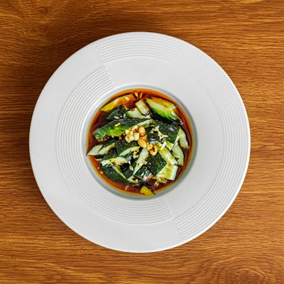
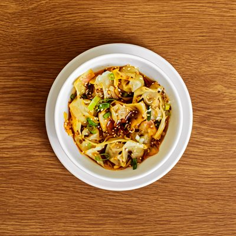
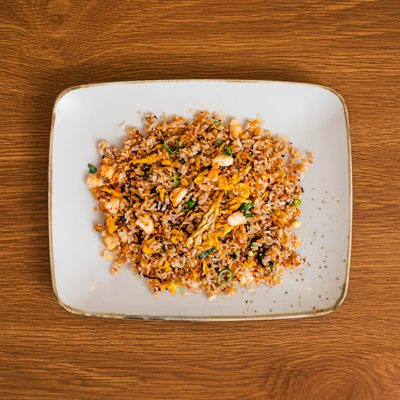
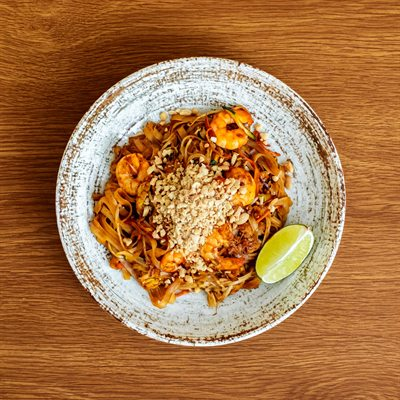
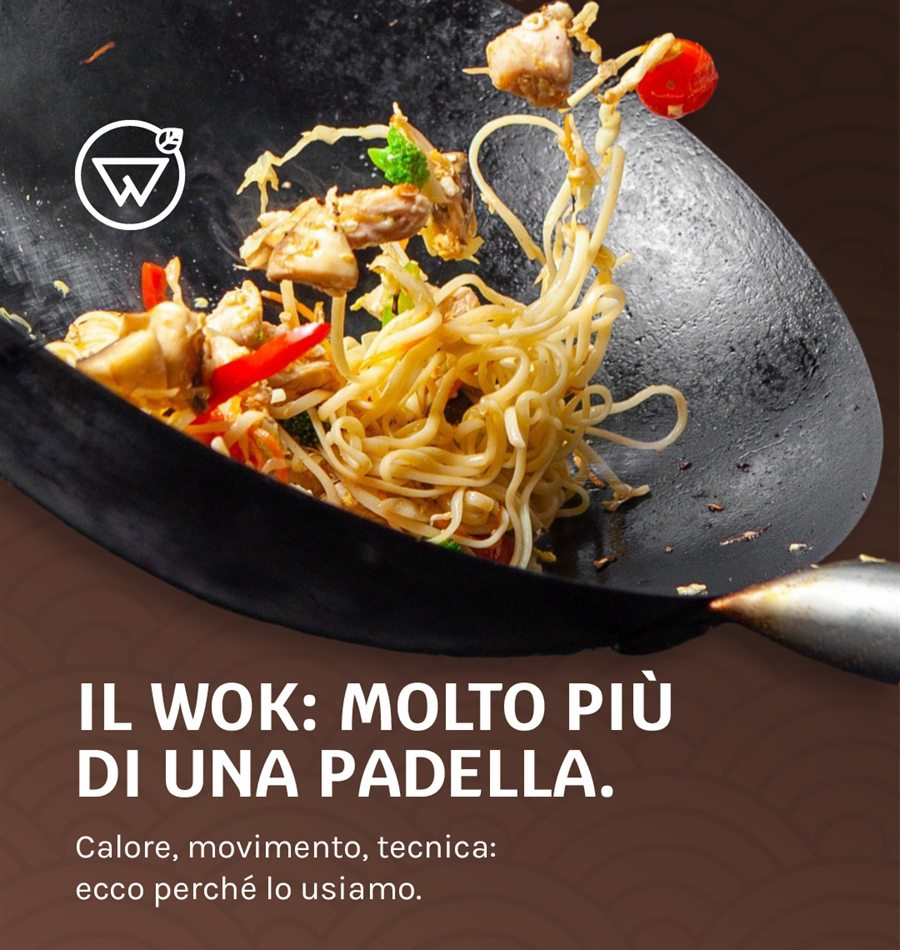
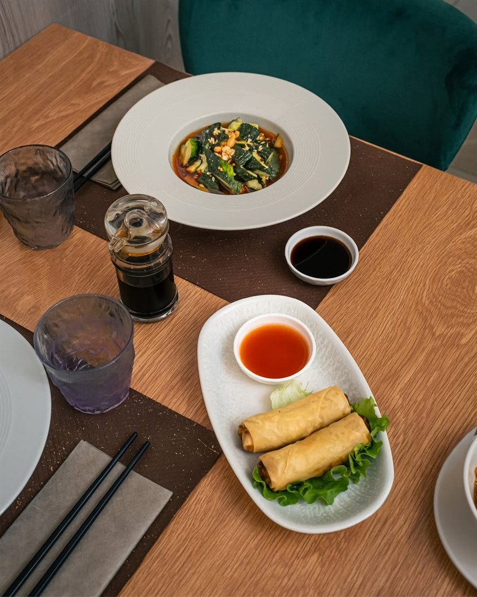
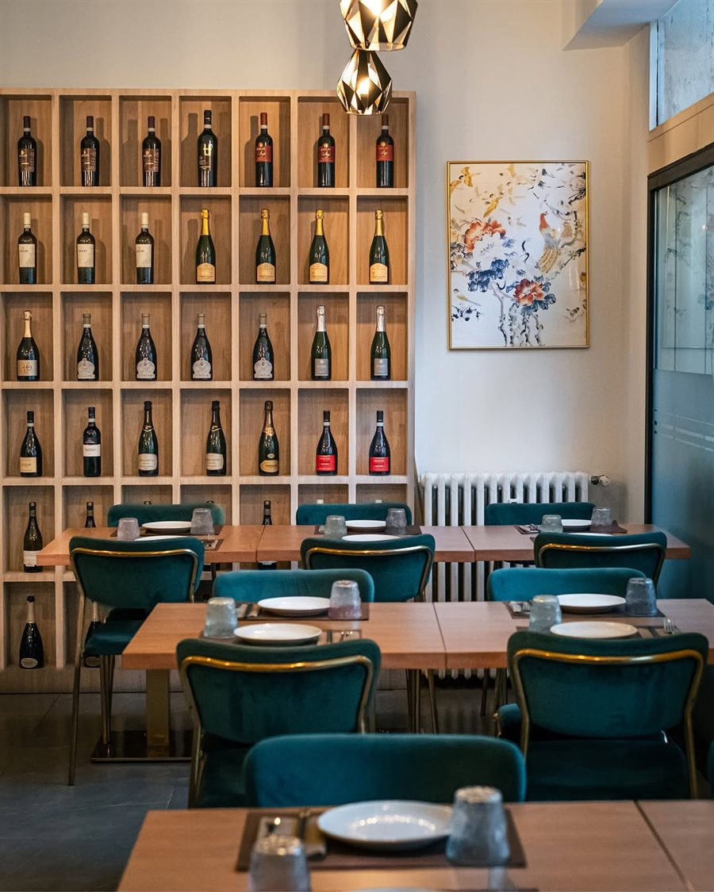
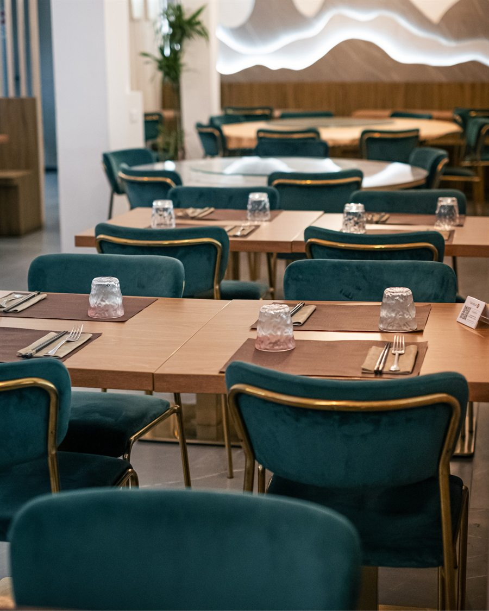

Per cominciare
- Insalata di cetrioli6 €
- Zampe di gallina disossate7 €
- Uovo centenario con tofu7 €
Verona · Via Bentegodi 6
Dim sum piegati a mano ogni mattina, wok a fuoco vivo, una sala di velluto e ottone a due passi dall'Arena. Niente all you can eat: solo i piatti che si mangiano in Cina.




In tavola
Insalata di cetrioli
Cetriolo, aglio, arachide, salsa agropiccante
Gira il tavolo di lato, o usa le frecce

La cucina
Il calore alto tiene le verdure croccanti, la carne succosa e i sapori vivi. È la ragione per cui certi piatti esistono solo qui, e non nel forno di casa.
Prenota
Pranzo e cena, sette giorni su sette ad agosto. Per i tavoli rotondi da sei o più conviene chiamare: sono pochi e vanno via presto.

Recensioni
10
Cucina autentica cinese paragonabile a quella autentica provata in Cina.
9,5
Miglior ristorante cinese di Verona, ambiente fresco e cibo ottimo e diverso dai soliti sapori.
10
Location curata nei dettagli. Diventerà tappa fissa per i futuri viaggi a Verona.
Dove siamo
37122 Verona — a due passi dall'Arena, parcheggio Arena a 300 m.
| Lunedì | 12:00–14:30 | 18:30–23:00 |
|---|---|---|
| Martedì | 12:00–14:30 | 18:30–23:00 |
| Mercoledì | Chiuso | |
| Giovedì | 12:00–14:30 | 18:30–23:00 |
| Venerdì | 12:00–14:30 | 18:30–23:00 |
| Sabato | 12:00–14:30 | 18:30–23:00 |
| Domenica | 12:00–14:30 | 18:30–23:00 |

